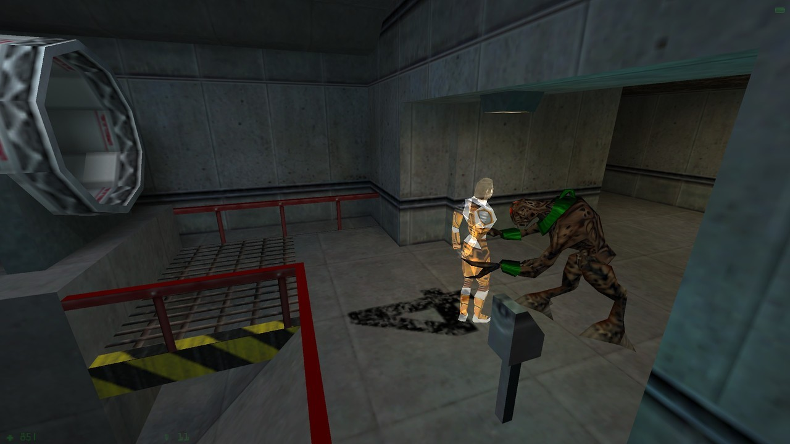

We Are Not Alone from Half-Life: Opposing Force by Gearbox
Happy 18th birthday, Op4! Released November 19, 1999.
I always loved revisiting the Hazard Course post-disaster.
One of the things that I find annoying though, is that Gearbox seemed to totally forget about this scene from Opposing Force when they made Half-Life Decay, 2 years later.
In Decay you visit this same exact part of the course, with the pipes, BEFORE Adrian Shephard does, however one of the pipes is broke (yet fine in Opposing Force) and the observation room doors have completely different textures…
… Forget Race X, that broken pipe ruined the Half-Life canon!